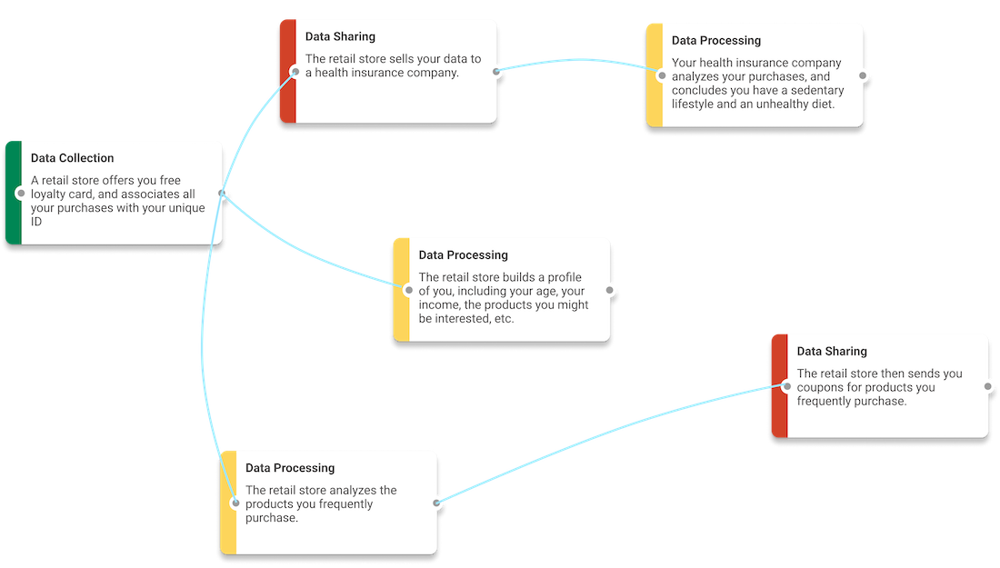

Project LPR: Collecting Users' Privacy Concerns of Data Practices at a Low Cost
|
 |
|
|
| Today, industry practitioners (e.g., data scientists, developers, product managers) rely on formal privacy reviews (a combination of user interviews, privacy risk assessments, etc.) in identifying potential customer acceptance issues with their organization’s data practices. However, this process is slow and expensive, and practitioners often have to make ad-hoc privacy-related decisions with little actual feedback from users. We introduce Lean Privacy Review (LPR), a fast, cheap, and easy-to-access method to help practitioners collect direct feedback from users through the proxy of crowd workers in the early stages of design. LPR takes a proposed data practice, quickly breaks it down into smaller parts, generates a set of questionnaire surveys, solicits users’ opinions, and summarizes those opinions in a compact form for practitioners to use. By doing so, LPR can help uncover the range and magnitude of different privacy concerns actual people have at a small fraction of the cost and wait-time for a formal review. |
Citation
- Lean Privacy Review: Collecting Users' Privacy Concerns of Data Practices at a Low Cost, Haojian Jin, Hong Shen, Mayank Jain, Swarun Kumar, and Jason Hong, TOCHI 2021 [PAPER]